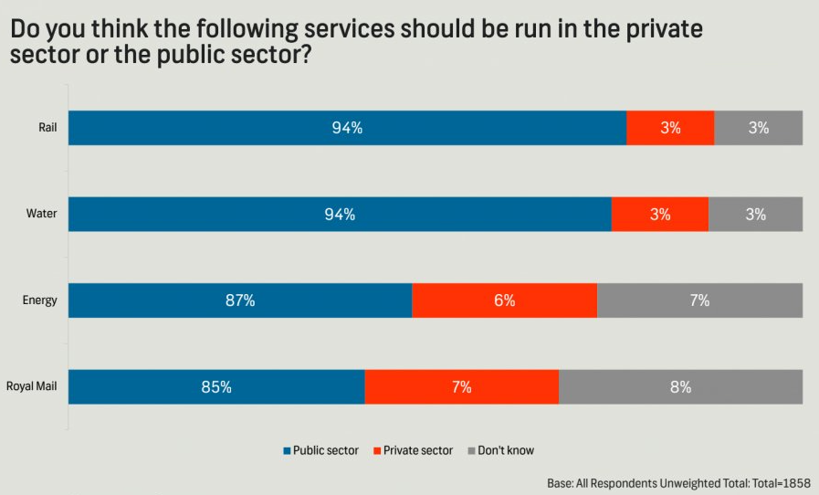

In this lab you’ll review and get practice with a variety of concepts, methods, and tools you’ve encountered thus far, with a focus on misrepresentation and ethics.
Guidelines
As we’ve discussed in lecture, your plots should include an informative title, axes should be labeled, and careful consideration should be given to aesthetic choices.
Note
Remember that continuing to develop a sound workflow for reproducible data analysis is important as you complete the lab and other assignments in this course. There will be periodic reminders in this assignment to remind you to Run all, commit, and sync your changes to GitHub. You should have at least 3 commits with meaningful commit messages by the end of the assignment.
Part 1 - Misrepresentation
Question 1
The following chart was shared by @GraphCrimes on X/Twitter on September 3, 2022.

What is misleading about this graph?
Suppose you wanted to recreate this plot, with improvements to avoid its misleading pitfalls from part (a). You would obviously need the data from the survey in order to be able to do that. How many observations would this data have? How many variables (at least) should it have, and what should those variables be?
Load the data for this survey from data/survation.csv. Confirm that the data match the percentages from the visualization. That is, calculate the percentages of public sector, private sector, don’t know for each of the services and check that they match the percentages from the plot.
Question 2
Create an improved version of the visualization. Your improved visualization:
should also be a stacked bar chart with services on the y-axis, presented in the same order as the original plot, and services to create the segments of the plot, and presented in the same order as the original plot
should have the same legend location
should have the same title and caption
does not need to have a bolded title or a gray background
How does the improved visualization look different than the original? Does it send a different message at a first glance?
Tip
Use \n to add a line break to your title. And note that since the title is very long, it might run off the page in your code. That’s ok!
Additionally, the colors used in the plot are #808080, #FF3205, and #006697.
Run all, commit, and sync.
Make sure that you commit and push all changed documents and your Git pane is completely empty before proceeding.
Part 2 - DatasauRus
The data frame you will be working with in this part is called datasaurus_dozen.csv. This single data frame contains 13 datasets, designed to show us why data visualization is important and how summary statistics alone can be misleading. The different datasets are marked by the dataset variable, as shown in Figure 1.
Figure 1: The datasaurus_dozen data frame stacks 13 datasets on top of each other. This figure shows the first three datasets.
Note
If it’s confusing that the data frame is called datasaurus_dozen when it contains 13 datasets, you’re not alone! Have you heard of a baker’s dozen?
Calculate the mean of x, mean of y, standard deviation of x, standard deviation of y, and the correlation between x and y for each level of the dataset variable. Then, in 1-2 sentences, comment on how these summary statistics compare across groups (datasets).
Tip
There are 13 groups but DataFrames only print out 10 rows by default. Add print(n = 13) as the last step to display all rows.
Question 4
Create a scatterplot of y versus x and color and facet it by dataset. Then, in 1-2 sentences, how these plots compare across groups (datasets). How does your response in this question compare to your response to the previous question and what does this say about using visualizations and summary statistics when getting to know a dataset?
Run all, commit, and sync.
Make sure that you commit and push all changed documents and your Git pane is completely empty before proceeding.
Part 3 - Election polling
SurveyUSA polled 1,500 US adults between January 31, 2024 and February 2, 2024. Of the 1,500 adults, 1,259 were identified by SurveyUSA as being registered to vote, and of these 1,048 were found to be likely to vote in the 2024 November election for President.1 The following question was asked to these 1,048 adults:
1,048 were found to be likely to vote in the 2024 November election for President and were asked the substantive questions which follow.
Responses were broken down into the following categories:
Variable
Levels
Age
18-49; 50+
Vote
Donald Trump (R); Joe Biden (D); Undecided
Of the 1,048 responses, 507 were between the ages of 18-49. Of the individuals that are between 18-49, 238 individuals responded that they would vote for Donald Trump, 237 said they would vote for Joe Biden, and the remainder were undecided. Of the individuals that are 50+, 271 individuals responded that they would vote for Donald Trump, 228 said they would vote for Joe Biden, and the remainder were undecided.
Question 5
Fill in the code below to create a two-way table that summarizes these data.
For parts b-d below, use your response starting with survey_counts, calculate the desired proportions, and make sure the result is an ungrouped data frame with a column for relevant counts, a column for relevant proportions, and a column for the groups you’re interested in.
Calculate the proportions of 18-49 year olds and 50+ year olds in this sample.
Calculate the proportions of those who want to vote for Donald Trump, Joe Biden, and those who are undecided in this sample.
Calculate the proportions of individuals in this sample who are planning to vote for each of the candidates or are undecided among those who are 18-49 years old as well as among those who are 50+ years old.
Question 6
Re-create the following visualization that displays relationship between age and vote.
Tip
The colors used in the plot are "#E81B23", "#0015BC", and "#808080". The theme is sns.set_theme(style="whitegrid")
Based on your calculations so far, as well as your visualization, write 1-3 sentences that describe the relationship, in this sample, between age and plans for presidential vote.
Run all, commit, and sync.
Make sure that you commit and push all changed documents and your Git pane is completely empty before proceeding.
Part 4 - Ethics
Important
The following two questions ask you to summarize articles on data science ethics. You are not allowed to use Chat GPT or similar tools in answering these questions – you must actually read the articles and summarize them yourself. Please be ethical, at a minimum when discussing ethics!
Question 7
For each of the following websites, first determine whether you’re allowed to scrape data from them using tools we’ve learned in this course.
Then, read (the relevant portions of their) Terms of Use/Service.
Finally, summarize your findings about whether you can or cannot scrape data from these websites in 1 sentence for each website. Additionally, quote the relevant sentence(s) from the Terms of Use/Service.
Hint
In the Terms of Use/Service documents, it might be productive to search for keywords like “scrape” or “scraping” to find the relevant portions.
Question 8
One current ethical discussion in data science involves the training of “Large Language Models” such as ChatGPT. These models are trained using massive corpora (document sets) that include large amounts of work that is covered under copyright law. Read the following two articles:
Write a short paragraph (maximum 8 sentences) discussing the arguments on both sides of the discussion over copyright in training large language models.
Question 9
Another major ethical discussion in data science resolves around discriminatory biases in machine learning models. These biases can have real-world impacts in lending, criminal justice, hiring, and more. Many of these algorithms are so-called “black boxes”, meaning the exact process they take from input to output is unclear. Read the following articles:
Write a short paragraph (maximum 8 sentences) discussing the nature of biases in machine learning and in datasets, and any possible solutions that could help limit those biases.
Question 10
To complete this exercise you will first need to watch the documentary Coded Bias. To do so, you either need to be on the Duke network or connected to the Duke VPN. Then go to U of A Libraries Permalink and click on “View Online”. Once you watch the video, write a reflection in 2-5 bullet points highlighting at least one thing that you already knew about (from the course prep materials) and at least one thing you learned from the movie as well as any other aspects of the documentary that you found interesting / enlightening.
Important
This question requires no code, only narrative. Remember that, based on the syllabus, you may not use generative AI tools (e.g., Chat GPT) to write narrative on assignments.
Run all, commit, and sync one last time.
Make sure that you commit and push all changed documents and your Git pane is completely empty before proceeding.
Wrap-up
Submission
Warning
Before you wrap up the assignment, make sure all of your documents are updated on your GitHub repo. We will be checking these to make sure you have been practicing how to commit and push changes.
You must turn in the .ipynb file by the submission deadline to be considered “on time”.
Checklist
Make sure you have:
attempted all questions
run all code in your Jupyter notebook
committed and pushed everything to your GitHub repository such that the Git pane in VS Code is empty
Grading
The lab is graded out of a total of 50 points.
On Questions 1 through 10, you can earn up to 5 points on each question:
5: Response shows excellent understanding and addresses all or almost all of the rubric items.
4: Response shows good understanding and addresses most of the rubric items.
3: Response shows understanding and addresses a majority of the rubric items.
2: Response shows effort and misses many of the rubric items.
1: Response does not show sufficient effort or understanding and/or is largely incomplete.